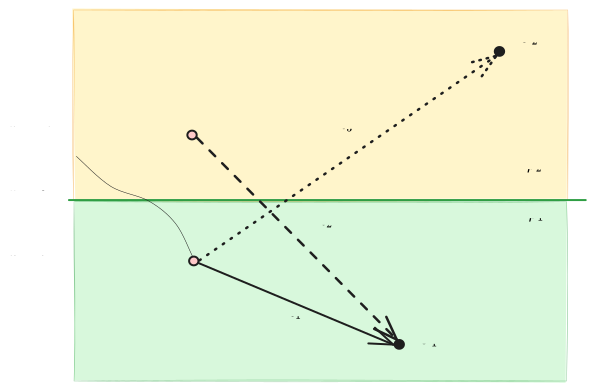
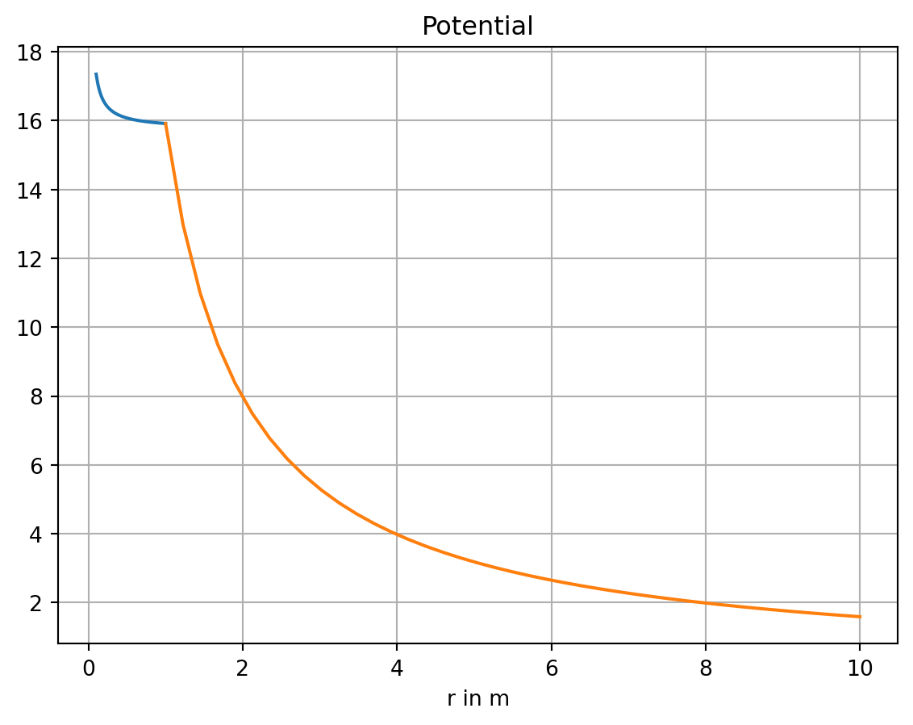
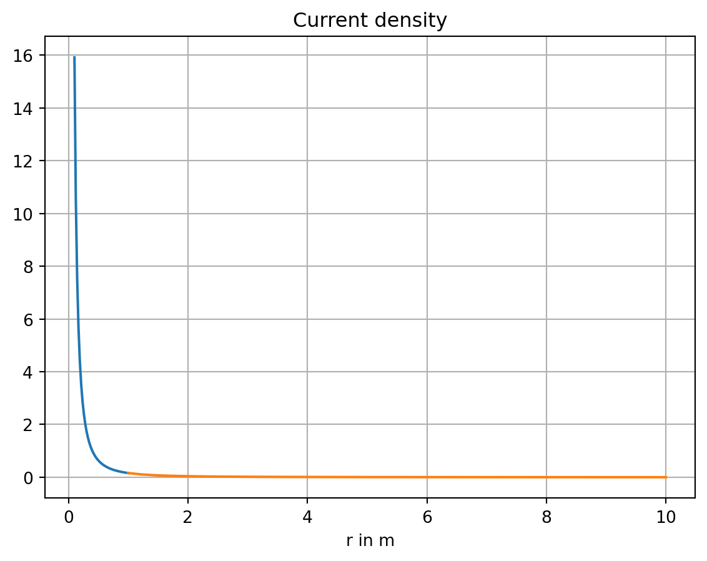
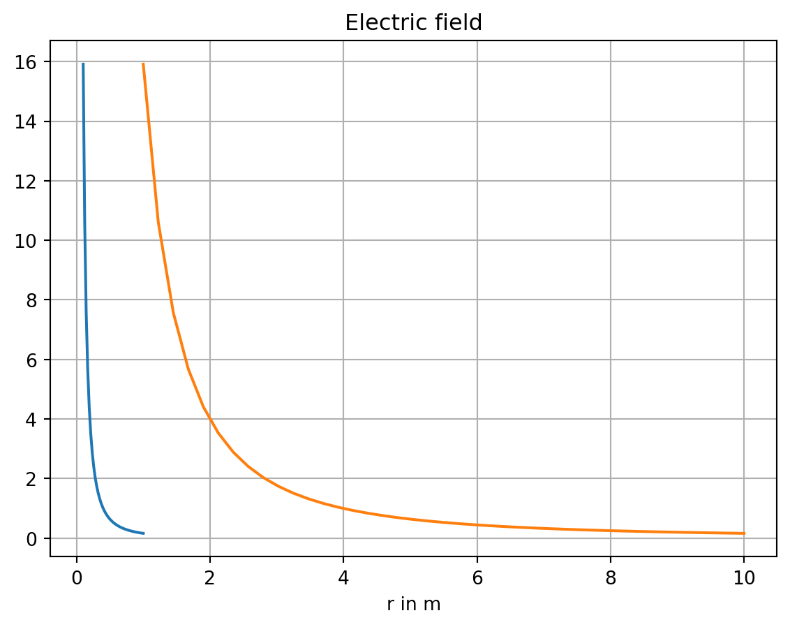
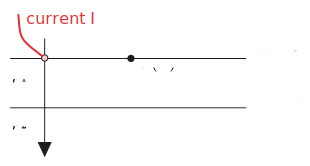
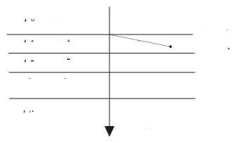

We consider the second BVP (Neumann problem) for the half-space. Because of \(\sigma_{air} \approx 0\) we set at \(z=0\) (Air-Earth interface) \[
\frac{\partial U}{\partial n} = 0
\] A point electrode carrying a current of \(I\) located at the point \(\vb{r_{0}}=(x_{0}, y_{0}, 0)^\top\) causes a potential at point \(\vb{r}\)\[
U(\vb{r}) = \frac{\rho I}{2 \pi |\vb{r} - \vb{r_{0}} |}
\] where \(\rho\) is the resistivity of the homogeneous half-space.
When the current electrode is at a depth \(t\) inside the half-space, i.e., at the point \(\vb{r_{1}} = (x_{0}, y_{0}, t)^\top, t > 0\), we can calculate the potential by means of the method of mirrors.
In \(z=0\) we observe \[
\vb{e}_{z} \cdot \vb{E} = -\vb{e}_{z} \cdot \nabla U = - \frac{\partial U}{\partial z} = 0
\]
We can construct an auxiliary Green’s function that generates the desired behavior in \(z=0\) by introducing a mirror source at \(\vb{r_{2}} = (x_{0}, y_{0}, -t)^\top\). We follow these steps:
mirror the source in \(z=t < 0\) at plane \(z=0\)
resulting in mirror source at \(z=-t\)
replace the resistivity of the insulating half-space by the resistivity of the lower half-space
inject the same current \(I\) at both (real and mirrored) sources
observe no-flow through \(z=0\)
The potential function \[
U(\vb{r}) = \frac{\rho I}{4 \pi} \left( \frac{1}{|\vb{r}-\vb{r_{1}} |}+\frac{1}{|\vb{r}-\vb{r_{2}} |} \right)
\] satisfies the Neumann condition in \(z=0\) as well as \(\nabla^{2}U=0\), Further, \(U(\vb{r}) \to 0\) for \(| \vb{r}| \to \infty\).
Question: May we apply the method of mirrors when the upper half-space is a conductor?

When observing the potential in the lower half-space \(z>0\), we introduce a fictitious current source with current \(I'\) at \(z=-t\). We observe a superposition of both sources in \(z>0\): \[
U_{1}(P_{1}) = \frac{\rho_{1}I}{4 \pi |\vb{r} - \vb{r}_{1}|} + \frac{\rho I'}{4 \pi |\vb{r} - \vb{r}_{2}|}
\] with \[
\begin{align}
R_{1} & = |\vb{r} - \vb{r}_{1}| = \sqrt{ (x - x_{1})^{2} + (y - y_{1})^{2} + (z - t)^{2}} \\
R_{2} & = |\vb{r} - \vb{r}_{2}| = \sqrt{ (x - x_{2})^{2} + (y - y_{2})^{2} + (z + t)^{2}}
\end{align}
\]
When the point of observation is in the upper half-space, we introduce another fictitious source with strength \(I''\) at \(z=t\) and obtain \[
U_{2}(P_{2}) = \frac{\rho_{2}I''}{4 \pi |\vb{r} - \vb{r}_{3}|}
\] The two currents \(I'\) and \(I''\) are still unknown. We need the conditions of contnuity in \(z=0\) to determine these two currents.
In \(z=0\) there holds \[
\begin{align}
U_{1} & = U_{2} \\
\sigma_{1} \frac{ \partial U_{1} }{ \partial z } & = \sigma_{2} \frac{ \partial U_{2} }{ \partial z }
\end{align}
\] If we move the observation point into the plane \(z=0\), then \(R_{1} = R_{2} = R_{3}\). It follows \[
\rho_{1}I' - \rho_{2}I'' = -\rho_{1}I
\] From the second condition we obtain \[
I' + I'' = I
\]
Finally, we get \[
\begin{align}
I' & = \frac{\rho_{2}-\rho_{1}}{\rho_{1}+\rho_{2}}I = k_{12}I \\
I'' & = \frac{2\rho_{1}}{\rho_{1}+\rho_{2}}I = t_{12}I
\end{align}
\] The coefficients \(k_{12}\) and \(t_{12}\) are referred to as coefficient of reflection and coefficient of transmission, resp. It holds \[
t_{12} = 1 - k_{12}, \quad -1 \le k_{12} \le 1
\] If the upper half-space is an ideal conductor, i.e., \(\rho_{2}=0\), then \(k_{12}=-1\). When \(\rho_{2} \to \infty\), then \(k_{12}=1\).
We conclude that \[
\begin{align}
U_{1} & = \frac{\rho_{1}I}{4 \pi} \left( \frac{1}{R_{1}} + \frac{k_{12}}{R_{2}} \right) \\
U_{2} & = \frac{\rho_{2}I}{4 \pi R_{3}} \frac{2 \rho_{1}}{\rho_{1}+\rho_{2}} = \frac{\rho_{m}I}{4 \pi R_{3}}
\end{align}
\] with \[
\rho_{m} = \frac{2 \rho_{1} \rho_{2}}{\rho_{1} + \rho_{2}} = \left[ \frac{\sigma_{1}+\sigma_{2}}{2} \right] ^{-1}
\] The potential in the upper half-space is that of a homogeneous full-space with a resistivity \(\rho_{m}\).
32.2 A conducting semi-sphere as an electrode
We consider a uniform halfspace with resistivity \(\rho_2\). There is a point source \(I\) located at the origin. The semi-sphere of radius \(a\) has a resistivity of \(\rho_1\). The semi-sphere is aligned with the \(z\)-axis. The upper half-space is insulating, we impose a Neumann boundary condition in \(z=0\).
Goal: Find the potential inside and outside of the semi-sphere.
We make the ansatz:
\[
\begin{align}
U_1(r) &= \frac{\rho_1 I}{2 \pi r} + U_{0} \qquad & r < a \\
U_2(r) &= \frac{\rho_2 I'}{2 \pi r} \qquad & r > a
\end{align}
\]
Q: What’s the rationale behind this ansatz?
To solve for the unknowns \(U_{0}\) and \(I'\) we need the conditions of continuity at the surface of the semisphere, where \(r=a\):
We first carry out the differentiation and then replace \(r\) with \(a\) to find \[
\begin{align}
\frac{\rho_{1}I}{2 \pi a} + U_{0} & = \frac{\rho_{2}I'}{2 \pi a} \\
-\frac{I}{2 \pi a^{2}} & = -\frac{I'}{2 \pi a^{2}}
\end{align}
\] which simplifies to \[
I' = I
\] and \[
U_{0} = \frac{(\rho_{2}-\rho_{1})I}{2 \pi a}
\]
The potential inside the semi-sphere is composed of two contributions:
the potential due to the point source
the potential caused by charge accumulation across the surface of the semi-sphere
The latter is constant.
32.2.3 Visualization
Show the code
import matplotlib.pyplot as pltimport numpy as nprho1 =1.0rho2 =100.0a =1.0def U1(r): u = rho1 / (2* np.pi * r) + (rho2 - rho1) / (2* np.pi * a)return udef U2(r): u = rho2 / ( 2* np.pi * r)return uR1 = np.linspace(start=0.1, stop=a, num=41)R2 = np.linspace(start=a, stop=10.0, num=41)plt.plot(R1, [U1(r) for r in R1])plt.plot(R2, [U2(r) for r in R2])plt.grid(True)plt.title('Potential')plt.xlabel('r in m');

We observe that the potential is continuous in \(r=a\).
Show the code
plt.plot(R1, [1/ (2* np.pi * r**2) for r in R1])plt.plot(R2, [1/ (2* np.pi * r**2) for r in R2])plt.grid(True)plt.title('Current density')plt.xlabel('r in m');

Show the code
plt.plot(R1, [rho1 / (2* np.pi * r**2) for r in R1])plt.plot(R2, [rho2 / (2* np.pi * r**2) for r in R2])plt.grid(True)plt.title('Electric field')plt.xlabel('r in m');

The field only has a normal component w.r.t. the surface of the semi-sphere. Therefore, we observe a discontinuity in the order of the jump in resistivities.
32.3 The two-layer case
We consider the case when the half-space is composed of two layers with distinct resistivities \(\rho_1\) and \(\rho_2\). The thickness of layer 1 is \(h\).

We calculate the potential \(V\) at the surface of the half-space.
Let’s first assume that \(h \to \infty\). Then the potential in the top-layer is that of a homogeneous half-space
\[
V(r) = \frac{\rho_{1} I}{2 \pi r}
\]
However, when the thickness of the top-layer is finite, we observe a superposition of the potential of a homogeneous half-space and a potential caused by the basement layer.
\[
V = \frac{I \rho_{1}}{2 \pi} \left( \frac{1}{r} + 2 \sum_{m=1}^{\infty} \frac{k_{12}^{m}}{\sqrt{ r^{2} + (2 m z)^{2} }} \right)
\]
The first term represents the normal potemtial, while the summation provides the effect of the anomalous potential caused by the finite thickness \(h\).
The series converges because \(|k_{12}|<1\).
Further, the denominator increases with increasing \(m\).
Numerical implementation: The amount of terms in the summation depends on \(k_{12}\) and \(z/r\).
32.4 Resistivity sounding over an \(N\)-layered half-space
We consider the \(N\)-layered case for DC resistivity applications.
For the solution of the problem, the method of mirrors seems tedious due to the vast amount of mirror sources to be considered.
A more practical method is based on the solution of the Laplace equation in an appropriate coordinate system. We choose a cylindrical coordinate system.

In cylindrical coordinates with axial symmetry, the Laplace equation reads \[
\Delta U = \frac{1}{r} \frac{ \partial U }{ \partial r } \left(r \frac{ \partial U }{ \partial r }\right) + \frac{ \partial^{2} U }{ \partial z^{2} } = 0
\] We choose the method of separation of variables: \[
U(r,z) = F(r, \lambda) \cdot Z(z, \lambda)
\] and enforce \[
U \to 0 \text{ for } R \to \infty
\] where \(R^{2} = r^{2} + z^{2}\).
Inserting into the Laplace equation yields \[
\underbrace{ \frac{1}{rF} \frac{ \mathrm d }{ \mathrm dr } \left( r \frac{ \mathrm dF }{ \mathrm dr } \right) }_{ =-\lambda^{2} } + \underbrace{ \frac{1}{Z} \frac{ \mathrm d^{2} Z }{ \mathrm dz^{2} } }_{ =+\lambda^{2} } = 0
\tag{32.1}\]
with the separation parameter\(\lambda\). The first term is \[
F'' + \frac{1}{r} F' + \lambda^{2} F = 0
\] which is referred to as Bessel differential equation, which has the solution \[
F(r, \lambda) = C(\lambda)J_{0}(\lambda r) + D(\lambda)N_{0}(\lambda r)
\] Since \(N_{0}(\lambda r)\) has a singularity at \(r=0\), we discard it by setting \(D(\lambda)=0\) for all \(\lambda\).
The second term in 32.1 describes an exponential decay: \[
Z'' - \lambda^{2}Z = 0
\] Its solution is \[
Z(z, \lambda) = A(\lambda) e^{ -\lambda z } + B(\lambda) e^{ +\lambda z }
\] Finally, \[
U_{i}(r,z) = \frac{\rho_{1}I}{2 \pi } \int_{0}^{\infty} \left( A_{i} e^{ -\lambda z } + B_{i}e^{ +\lambda z } \right) J_{0}(\lambda r) \, \dd \lambda
\] This is the secondary potential function of layer \(i\) which is caused by the layered half-space and adds to the primary potential\(U_{0}(r,z)\) of a homogeneous half-space of resistivity \(\rho_{1}\).
For \(U_{0}\) it holds \[
\begin{align}
U_{0}(r,z) & = \frac{\rho_{1}I}{2 \pi R} = \frac{\rho_{1}I}{2 \pi} \frac{1}{\sqrt{ r^{2}+z^{2} }} \\
& = \frac{\rho_{1}I}{2 \pi} \int_{0}^{\infty} e^{ -\lambda z } J_{0}(\lambda r) \, \dd \lambda
\end{align}
\] The integral is the well-known Weber-Lipschitz integral.
For \(n=1\) we find for the total potential \[
U_{1}(r,z) = U_{0}(r,z) + \frac{\rho_{1}I}{2 \pi} \int_{0}^{\infty} \left[ A_{1}(\lambda)e^{ -\lambda z } + B_{1}(\lambda)e^{ +\lambda z }) \right] J_{0}(\lambda r) \, \dd \lambda
\] Inside the basement layer with index \(i=n\) it holds for the secondary potential \[
U_{n}(r,z) = \frac{\rho_{1}I}{2 \pi} \int_{0}^{\infty} A_{n}(\lambda)e^{ -\lambda z } J_{0}(\lambda r)\, \dd \lambda
\] Here we restrict the solution such that \[
U_{n} \to 0 \text{ for } (r,z) \to \infty
\] which holds for \(B_{n}(\lambda)=0\).
It remains to determine the \(2n-1\) unknowns \(A_{1}, B_{1}, \dots, A_{n}\).
At the layer boundaries \(z=z_{i}, i=1,2,\dots,n-1\) we apply the usual conditions of continuity for the potential and the vertical component of the current density. These \(2n-2\) conditions have to be completed with the condition \[
\frac{ \partial U_{1} }{ \partial z } = 0 \text{ in } z=0
\] from which we obtain from the secondary potential \[
A_{1}(\lambda) = B_{1}(\lambda)
\]
We consider now the case \(n=2\). The layer boundary is in \(z=h\).
The potential in the first layer is \[
U_{1}(r,z) = \frac{\rho_{1}I}{2 \pi} \int_{0}^{\infty} \left[ (1 + A_{1}(\lambda))e^{ -\lambda z } + A_{1}(\lambda)e^{ +\lambda z }) \right] J_{0}(\lambda r) \, \dd \lambda
\] For the second layer we obtain \[
U_{2}(r,z) = \frac{\rho_{1}I}{2 \pi} \int_{0}^{\infty} A_{2}(\lambda)e^{ -\lambda z } J_{0}(\lambda r)\, \dd \lambda
\]
The conditions in \(z=h\) are \[
\begin{align}
U_{1} & = U_{2} \\
\frac{1}{\rho_{1}} \frac{ \partial U_{1} }{ \partial z } & = \frac{1}{\rho_{2}} \frac{ \partial U_{2} }{ \partial z }
\end{align}
\] from which we obtain \[
A_{1}(\lambda) = k_{12} \frac{e^{ -2 h \lambda }}{1 - k_{12}e^{ -2 h \lambda }}
\] and \[
A_{2}(\lambda) = t_{12} \frac{1}{1 - k_{12}e^{ -2 h \lambda }}
\] where \[
k_{12} = \frac{\rho_{2}-\rho_{1}}{\rho_{2}+\rho_{1}}
\] and \[
t_{12} = \frac{2 \rho_{2}}{\rho_{1}+\rho_{2}}
\] For \(z=0\) we find \[
\begin{align}
U_{1}(r,0) & = \frac{\rho_{1}I}{2 \pi} \int_{0}^{\infty} \left( 1 + 2 A_{1}(\lambda) \right) J_{0}(\lambda r) \, \dd \lambda \\
& = \frac{\rho_{1}I}{2 \pi} \left\{ \frac{1}{r} + 2\int_{0}^{\infty} A_{1}(\lambda) J_{0}(\lambda r) \, \dd \lambda\right\}
\end{align}
\] The integral is known as Stefanescu integral. The kernel function \[
A_{1} = A_{1}(\lambda, \rho_{1}, \rho_{2}, h)
\] contains all information about the subsurface.
Recall that \(|k_{12}| < 1\). With \[
x:= k_{12}e^{ -2 h \lambda }
\] we can rewrite the kernel function as \[
A_{1} = \frac{x}{1-x}
\] For small \(x\) we expand this into a series \[
\frac{x}{1-x} \approx x + x^{2} + x^{3} \dots = \sum_{m=1}^{\infty}x^{m} \quad\text{ for } |x|<1
\] We recognize \[
A_{1} = \sum_{m=1}^{\infty} \left( k_{12}e^{ -2 h \lambda } \right) ^{m}
\] For \(U_{1}\) we obtain \[
U_{1}(r,z) = \frac{\rho_{1}I}{2 \pi} \left\{ \frac{1}{r} + 2 \int_{0}^{\infty} J_{0}(\lambda r) \sum_{m=1}^{\infty} \left( k_{12}e^{ -2 h \lambda } \right) ^{m} \, \dd \lambda \right\}
\] From the Weber-Lipschitz integral we know that, with \(z=2 h m\), \[
\frac{1}{\sqrt{ r^{2} + 4 h^{2} m^{2}}} = \int_{0}^{\infty} e^{ -2 h m \lambda } J_{0}(\lambda r) \, \dd \lambda
\] It follows after rearranging the order of integration and summation, that \[
U_{1}(r,z) = \frac{\rho_{1}I}{2 \pi} \left\{ \frac{1}{r} + 2 \sum_{m=1}^{\infty} \frac{k_{12}^{m}}{\sqrt{ r^{2}+4 m^{2}h^{2} }} \right\}
\]
This reproduces the result obtained formerly with the help of the method of mirrors for the two-layered case.
For \(n>2\) we can exploit a recursion algorithm. We define \[
T_{1} = \rho_{1}(1+2A_{1})
\] with \[
\begin{align}
T_{n} & = \rho_{n} \\
T_{i} & = \frac{T_{i+1} + \rho_{i}\tanh(\lambda d_{i})}{1 + \sigma_{i}T_{i+1}\tanh(\lambda d_{i})} \\
d_{i} & = z_{i} - z_{i-1}
\end{align}
\] It follows \[
U_{1}(r,0) = \frac{I}{2 \pi} \int_{0}^{\infty} T_{1}(\lambda) J_{0}(\lambda r)\, \dd \lambda
\tag{32.2}\]
32.4.1 Apparent resistivity
In the Schlumberger array we have \[
\rho_{a} = -\frac{2\pi r^{2}}{I} \frac{ \mathrm dU }{ \mathrm dr } \bigg|_{r=s}
\tag{32.3}\]
where \(s = \dfrac{L}{2}\) is the half electrode spacing. Obtaining the gradient from 32.2 and substituting in 32.3 we have \[
\rho_{a} = s^{2} \int_{0}^{\infty} T_{1}J_{1}(\lambda s) \lambda \, \dd \lambda
\]
This integral can be evaluated after applying a transformation of the variables \[
\begin{align}
r & = r_{0}e^{ x } \\
\lambda r_{0} & = e^{ -y } \\
\lambda r & = e^{ x-y }
\end{align}
\] which yields a convolutional integral\[
\rho_{a}(x) = \int_{-\infty}^{\infty} \hat{T}(y) \hat{J}(x-y) \, \dd y
\] The numerical quadrature can be evaluated by a truncated sum \[
\rho_{a,k} = \sum_{i=-n_{1}}^{n_{2}} a_{i}T_{k-i}
\] where the \(a_{i}\) are pre-calculated filter coefficients approximating the action of \(\hat{J}\) on \(\hat{T}\).